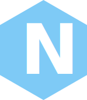
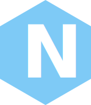
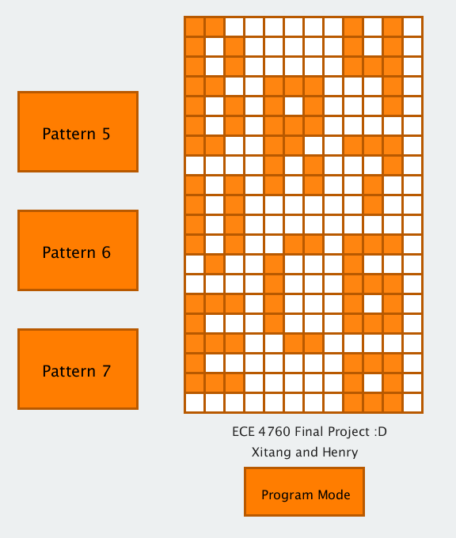

Beautiful Interactive Waterfall
Background
I took Prof. Bruce Land’s legendary “ECE 4760 Digital Systems Design Using Microcontrollers” in Fall 2017. For the last 4-5 weeks of class, students worked on a final project on any topic they choose to pursue. My lab partner Liheng and I wanted to work on an interdisciplinary project and came across water curtain when we were surfing the internet. Water curtain combines water, gravity physics, mechanical structure and electronics control to create beautiful artistic effects, letters, graphics…
Most water curtains we found online were super large (at least 4m height x 4m width), very expensive (at least thousands dollars) and therefore limited for high end shows and events. There were a few attempts to create smaller versions of water curtains. Some failed miserably. Some succeeded but had almost zero documentations of their works. We took the initiative to create an innovative open sourced mini waterfall design that follows the three design specifications: 1. Interactable, 2. Modularity and 3. Replicability.
The below video was filmed by Prof. Land during our final project demo where we gave an quick overview of the waterfall and interacted the waterfall with an App. There are 3 modes in the App. In Play Mode, users can direct control the waterfall in real time and play with it. In Program Mode, users can draw patterns or letters on a square arrays sketch pad and display them on the waterfall, e.g. waterfalling letters such as “C”, “U”. In Enjoy Mode, there is a soothing 1 minute waterfall show for user to enjoy.
Design and Development
The design and development of this project (mechanical, hardware, software) can be found in our final report website: Link Click Here.
Result and Reflection
 We successfully created a modular portable mini waterfall design, with easily customizable mechanical parts obtained in accessible vendor like Home Depot and Target. And the App were able to perform the three modes we set forth to interact with the waterfall.
Bruce has been teaching ECE 4760 in Cornell for about 20 years. There had been two previous water related final projects and both didn’t end well (in fact, one exploded in lab according to Bruce). Bruce commented “very impressive” to our project at the end of the demo video. We were mad happy that we integrated electronics with water nicely and was able to impress Bruce that electronics and water can indeed be friends with good engineering effort.
Still, there is a problem with our design that we ran out of time to address, which is the fact that our design only has 3 bit vertical display resolution. Our design’s height is about 0.5m. Using the physics free fall equation h = ½ * g * t^2, where h is 0.5m and g is 9.8m/s^2, we can compute that it takes water 0.319s to fall before reaching the floor. Due to budget limit of our final project (<$125), we purchased cheap solenoid valves that charge and discharge rather slowly ~0.1s. Therefore, our design only has about 3 bit vertical display resolution (0.319s / 0.1s ≈ 3). It displays complex patterns and letters in a twisted and blurred manner, but it displays simple pattern and letter such as C and U nicely. There are two ways to address this problem. The first option is to increase the height of the design. If the height is increased by four times, the design would have 6 bit vertical display resolution. The second option is to get better solenoid valves that switch on/off faster. If using solenoid valves that charge and discharge ~0.05s, the design would also have 6 bit vertical display resolution. One should aim for at least 8 bit vertical display resolution to display meaningful patterns.
ECE4760 Sample Labs (Not Part of the Project)
We completed a few labs throughout the semester for ECE 4760. Below are video demos of the three labs we have done. The left is a Ball Bouncing Video Game that we made on a TFT display. Player has to control a paddle to bounce balls into collectors to get points and player loses points if the balls get past the paddle. The middle is a One Arm Hovering ‘Helicopter’ that flies to user specified angles (e.g. 0°, 30°, -30°, 0°) using PID algorithms to minimize overshoot. User can also direct controls it in real time. The right is a Cricket Chirp Generator that produces audio output of a simplified cricket chirp based on parameters user enters.
P.S. - Prof. Land (students generally go by Bruce because of his approachability) is among my list of favorite professors in Cornell. Bruce is always in lab to help students and in his office to share his thoughts if any student needs advices, whether personal or technical. They are the people that define Cornell ECE. Taking Bruce’s ECE 4760 taught me that “Cornell ECEs Can do Everything”!